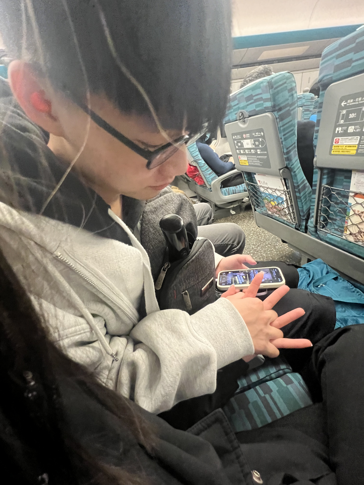

W ❤ K 勝過一切
希望妳看到這些，能好好回憶我們以前的點點滴滴
重新體驗我們的熱戀
按鍵盤 "↓" 開始W & K的故事
交往前，我其實很孤單，但妳總是會陪我聊天

害我總是一直再偷偷等妳訊息

沒回的時候總是會胡思亂想

直到一起去夜店的時候

妳喝醉躺在我身上

我會偷偷蹭一下妳的頭

在第一次探索我家的時候

好想直接告訴妳

我好像喜歡上妳惹

但...妳也知道我的疑慮

直到妳開口問我
我才鼓起勇氣，對妳訴說對妳的感覺


我們的故事從這一天開始
夜店前，我真的很害羞
夜店期間，我們總是拉著對方
隔天去ktv夜唱，躺在妳身上有種莫名的安全感
即使音樂再大聲再吵，很快的就安心入睡
喜歡靠著妳、抱著妳睡覺
雖然我們再一起的那個暑假，我們都在各忙各的實習
但只要有空，我們就會無時無刻的視訊

總感覺我們就在互相的身邊

雖然在忙，但我們還是會抽空一起出去玩
接下來，就是我們遠距的開始
我一直以為，遠距會很痛苦，但我們24小時的陪伴，已經忘掉原來我們再遠距

無法想像如果我們沒再一起了，我會有多麽空虛、難過

我其實算是一個比較沒安全感的人
會總是想黏著妳

妳只要出門，妳都會電話放著帶著我出門，讓我安心

妳出國玩，妳也會發著妳快樂的自拍照，跟我分享

我也很像小朋友，會看著妳快樂的照片，跟妳一起感受這份快樂

我原本以為我們會遠距整整一年
但妳為了我，放長假的時候坐著辛苦的長途飛機回來見我

妳知道當時的我有多開心嗎

當時為了買花，做了很多功課，還提早一兩個小時到機場，怕會錯過妳
回來時，還陪我去體檢
看到妳還是那麼的叛逆我就放心了
一起去海底撈吃飯
喜歡無時無刻牽著妳，不讓妳走丟
跟妳再一起的每個晚上，總是過得很甜蜜
一起看夜景
幫妳把食物切一切剪一剪
其實可以的話，跟妳再一起的每一天，我都想接下幫妳吹頭髮這個任務


很快的，妳又要回英國，我們的第二次遠距
其實從三月開始
我漸漸發現妳對我很像沒以前熱情


即使這樣，我還是會像以前一樣
我對妳的好
不會因為妳對我冷淡，不想理我而去改變

因為我對妳好
是因為我愛著妳


我答應妳做的那些事情
也不是為了哄妳去應付妳的
我想讓妳覺得我是一個可以直得託付的男人
不敢說會做到最好，但至少我會付出全力去達成

我今年生日的時候，妳很像沒有來問我說我有沒有想要什麼
但其實我那時候心裡就有個底，我有想要的東西了
我想要把妳捧在手心，我想要照顧妳一輩子，我想要讓妳過上幸福的生活
只要是有關妳的都是我的願望
其實我真的很想知道
為什麼會變到今天這個樣子

我對妳從來沒變過
對妳的好也從來沒少過
我其實心裡有個底了，也能保證那些事情不再發生


現在對我來說
我最想要的是重新擁有妳
在新的一年
寫下我們快樂的回憶
我誠摯邀約妳，願意再重新愛我一次嗎，是否可以再讓我再走進妳的心一次
我能保證妳從我這邊拿到的只會有快樂，不會再有難過了


我愛妳
I love you

我自己在做這些的時候
其實自己偷哭了好幾次
我覺得我根本離不開妳
自己在做的時候，會一直想到原來我們之前那麼快樂，我就忍不住
我本來不愛哭的，但不知道為什麼，對妳我真的忍不住
我是不是真的很愛哭
不論我們最後結果如何
我都會愛妳到最後一刻，也會對妳好到最後
K，妳願意接受我的表白嗎
-- 按“Esc"鍵有驚喜